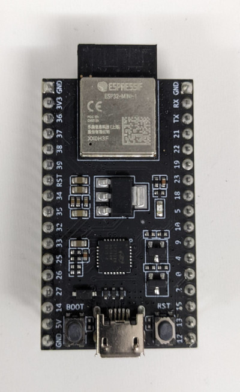
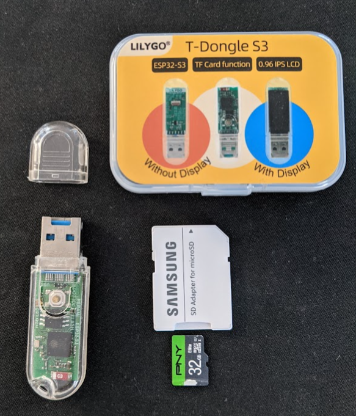

♊ ✦ Forth Day! ✦ ♊
══════════════════════════
ESP32forth talks to Gemini
══════════════════════════
November 16, 2024
Background
══════════
• ESP32forth (aka µEforth)
- C implementation of Forth
- Leverages X-Macros
- 4 "big" instructions + core opcode in C
- Mostly bootstraps from Forth code in a string
• Gemini
- Google's AI Chatbot
- Multimodal Large Language Model
- Gemini API
ESP32 Family
════════════
• WiFi + Bluetooth
• ~512KB memory
• ~4MB flash
• Solid Arduino IDE support
• ESP32 / ESP32-S2 / ESP32-S3 (LX7)
• ESP32-C3 (RISC-V)
@esp32.jpg

@t-dongle-s3.png

HTTPS ✦
ESP32 ──────────────▶ Gemini
JSON
HTTPS
═════
• Hypertext Transfer Protocol Secure
• Transport Layer Security (formerly SSL)
• Encrypt communication with a symmetric cipher
(usually AES)
• Key exchange and chain of trust with asymmetric cipher
(usually Elliptic Curve Diffie-Hellman, historically RSA)
- Resists man-in-the-middle attacks
- Requires Certificate Authority Roots of Trust
HTTPClient
══════════
• HTTP / HTTPS Arduino library
• Seems to check chain of trust
• Handles HTTP headers and streaming connections
• Supports connection reuse
• Added to ESP32forth as an "optional" module
Y(name, action) \
X("name", C_NAME, action) \
YV(vocabulary, name, action) \
XV(vocabulary, "name", C_NAME, action) \
n10 n9 n8 n7 n6 n5 n4 n3 n2 n1 n0 - Access stack as cell_t integer values
c4 c3 c2 c1 c0 - Access stack as char* values
b4 b3 b2 b1 b0 - Access stack as uint8_t* byte values
a4 a3 a2 a1 a0 - Access stack as void* values
NetworkClientSecure.new ( -- nclient )
NetworkClientSecure.delete ( nclient -- )
NetworkClientSecure.setCACert ( certz nclient -- )
#define OPTIONAL_HTTP_CLIENT_SUPPORT \
XV(HTTPClient, "NetworkClientSecure.new", \
NetworkClientSecure_new, PUSH new NetworkClientSecure()) \
XV(HTTPClient, "NetworkClientSecure.delete", \
NetworkClientSecure_delete, delete ((NetworkClientSecure *) a0); DROP) \
XV(HTTPClient, "NetworkClientSecure.setCACert", \
NetworkClientSecure_setCACert, \
((NetworkClientSecure *) a0)->setCACert(c1); DROPn(2)) \
HTTPClient.new ( -- hclient )
HTTPClient.delete ( hclient -- )
HTTPClient.begin ( url hclient -- err )
HTTPClient.beginNC ( url nclient hclient -- err )
HTTPClient.end ( hclient -- )
HTTPClient.connected ( hclient -- f )
HTTPClient.setReuse ( f hclient -- )
HTTPClient.setUseAgent ( agent hclient -- )
HTTPClient.setAuthorization ( username password hclient -- )
HTTPClient.setFollowRedirects ( f hclient -- )
HTTPClient.setRedirectLimit ( n hclient -- )
HTTPClient.GET ( hclient -- code )
HTTPClient.POST ( a n hclient -- code )
HTTPClient.sendRequest ( methodz a n hclient -- code )
HTTPClient.getSize ( hclient -- n )
HTTPClient.getString ( a n hclient -- )
HTTPClient.getStreamPtr ( hclient -- stream )
NetworkClient.available ( stream -- n )
NetworkClient.readBytes ( a n stream n )
JSON
════
• JavaScript Object Notation
• Simple types:
- double (covers int32 range also)
- string
- boolean (true, false)
- null
• Complex types:
- array [items...]
- object/dictionary { key:value... }
• Good format for protocol messages
- Human readable, reasonably compact
- Self describing
- Schema-less
But in Forth?
═════════════
• Need a way to represent nest structures
• Doesn't allow cycles
• Forth lets us build new types + stacks
• Build an APL / CoSy style ARRAYS vocabulary?
╭──string──╮
│ │
├──number──┤
│ │
value ├──object──┤
────────whitespace───┤ ├───whitespace─────▶
├──array───┤
│ │
├──'true'──┤
│ │
├─'false'──┤
│ │
╰──'null'──╯
defer <value>
....
:noname
<whitespace>
token case
[char] " of <string> endof
[char] { of <object> endof
[char] [ of <array> endof
[char] t of e: true s" true" _s endof
[char] f of e: false s" false" _s endof
[char] n of e: null s" null" _s endof
<number>
endcase
<whitespace>
; is <value>
╭───────────────────╮
│ │
├─────linefeed──────┤
│ │
├──carriage return──┤
│ │
├────────tab────────┤
whitespace │ │
────────────╭───┤ ├────────▶
│ │ ╭╯
│ ╰───────space──────┤
│ ╰╮
╰───────────────────────╯
: space? ( ch -- f )
dup 8 =
over 10 = or
over 13 = or
swap 32 = or ;
: <whitespace> begin token space? while skip repeat ;
array ╭────whitespace────╮
────────[───┤ ├───]─────▶
│ ╭╯
╭──,────╰──────value──────┤
│ ╰╮
╰──────────────────────────╯
: <array>
e: [ <whitespace>
0 MIXED array
begin
token [char] ] = if skip exit then
<value> box catenate <whitespace>
token [char] ] = if skip exit then
e: , <whitespace>
again
;
object ╭───────────────────whitespace─────────────────╮
────────{───┤ ├───}─────▶
│ ╭╯
╭──,────╰───whitespace──string──whitespace──:──value──┤
│ ╰╮
╰──────────────────────────────────────────────────────╯
: <object>
e: { <whitespace>
DICT box
begin
token [char] } = if skip exit then
<string> box <whitespace> e: : <whitespace> <value> box
catenate box catenate
token [char] } = if skip exit then
e: , <whitespace>
again
e: }
;
╭──────────────────╮
│ │
├────not \ or "────┤
string │ │
────────"───╭───┤ ├───"─────▶
│ │ ╭╯
│ ╰─────escaped─────┤
│ ╰╮
╰──────────────────────╯
: <string>
e: " s" " _s
begin token [char] " <> while
token [char] \ = if
<escaped>
else
token _c catenate
skip
then
repeat
e: "
;
╭───"───╮
│ │
├───\───┤
│ │
escaped ├───/───┤
────────────\──┤ ├──────────────────────────▶
├───b───┤backspace
│ │
├───f───┤formfeed
│ │
├───n───┤nl
│ │
├───r───┤cr
│ │
├───t───┤tab
│ ╰───────────────╮
│ │
╰───u────4_hex_digits───╯
: <escaped>
e: \
token skip case
[char] " of [char] " _c catenate endof
[char] \ of [char] \ _c catenate endof
[char] / of [char] / _c catenate endof
[char] b of 8 _c catenate endof
[char] f of 12 _c catenate endof
[char] n of nl _c catenate endof
[char] r of 13 _c catenate endof
[char] t of 9 _c catenate endof
[char] u of 255 _c catenate skip skip skip skip endof
-1 throw
endcase
;
number
══════
[-]888 -- mantissa no-leading zeros
[.888] -- fractional part
[E+888]
[E-888] -- exponent
[E888]
: digit? ( -- f ) token [char] 0 >= token [char] 9 <= and ;
: <digit> token [char] 0 - skip ;
: <integer> digit? assert <digit>
begin digit? while 10 * <digit> + repeat ;
: <fraction> digit? assert 10 * <digit> + >r 1- r>
begin digit? while 10 * <digit> + >r 1- r> repeat ;
: <number>
token [char] - = if skip -1 else 1 then
token [char] 0 = if skip 0 else <integer> then 0 swap
token [char] . = if skip <fraction> then
swap >r * r>
token [char] e = token [char] E = or if
skip
token [char] - = if
skip -1
else
token [char] + = if skip then 1
then
<integer> * +
then
dup if 10e s>f f** s>f f* _f else drop _i then
;
⌠ ⌠
│ Hello │
⌡ ⌡
┌───────────────────┐
│ TESTING │
│ │
└───────────────────┘
DEMO &
QUESTIONS❓
🙏
Thank you!